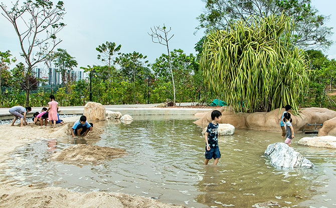

Jurong Lake Gardens
Welcome to my webpage! Let me give you an introduction to what you can do on your next trip to Jurong Lake Gardens. Nestled in the heartland of Singapore, Jurong Lake Gardens is a national garden located in the East. Spanning over a land area of 90-hectares, Jurong Lake Gardens comprises of 4 main gardens. Read on to find out more about what Jurong Lake Gardens can offer in your next fun family day out! In this article, I will be sharing 7 activities and places of interests you can explore on your visit to Jurong Lake Gardens. They are
Clusia Cove,
Forest Ramble,
Gardenhouse,
Rasau Walk,
Neram Streams,
PAssionWaVe@JLG, and finally the
ActiveSG Park. Read on if you would like to find out more!
1. Clusia Cove

Clusia Cove is a three-hectare water playground where children can learn and experience water movements that mimic the coastal shores. A self-contained water eco-system, it is a place where you will find a tidal play pond that offers families and children a fun water play area at Jurong Lake Gardens.
Opening Hours: 8:00am - 7:00pm (Closed on Mondays except for Public Holidays)
2. Forest Ramble
Inspired by nature, this playground mimics the natural movements of animals and insects. You can bounce on the trampolines like a frog, sail through the air like a butterfly, or soar on the zipline like a heron! There are 13 different adventure stations within Forest Ramble for children to explore!
Opening Hours: 8:00am - 10:00pm (Closed on Mondays except for Public Holidays)
3. Gardenhouse
The Gardenhouse has 4 event spaces where visitors can gather for a myraid of workshops ranging from gardening and crafts for children, to nature appreciation talks. You can look forward to Bazaar In The Garden (BIG), an event held monthly at Gardenhouse, featuring a full day of activities for the family!
Workshops & Programs: For more information about the workshops and programmes, visit their website
here
4. Rasau Walk

Situated along the edge of Jurong Lake, Rasau Walk is a 300m boardwalk that meanders through clusters of Nibong, Sealing Wax Palm and Rasau. A restored freshwater swamp, Rasau Walk contains over 50 species of plants! It's iconic red boardwalk will definitely add colour to your instagram feed! Don't forget to snap a insta worthy picture when you visit Rasau Walk!
Opening Hours: 24 hours
5. Neram Streams
With its lush greenery and serene surroundings, Neram Streams is a great place to spend a quiet afternoon. Consisting of a series of naturalised streams surrounded by aquatic plants and dragonflies, Neram Stream channel stormwater runoff from the surrounding gardens. The stormwater is cleansed by plantings in the streams and eventually flows into Jurong Lake, one of Singapore's 17 reservoirs. You can learn more about the area's rich biodiversity through the guided walks along the trail!
Opening Hours: 24 hours
6. PAssionWaVe@JLG

Passion Wave @ Jurong Lake Gardens provides various water sports activities for the young and old! With water activities such as paddle boating, kayaking, canoeing, as well as lifestyle programs such as arts and health & wellness programs. Definitely a fun family bonding activity on your day out! You can check out the rates for the various water activities
here when you plan for your next trip!
Opening Hours: Tuesday to Friday 9:00am - 6:00pm | Saturday and Sunday 8:00am - 6:00pm (closed on Mondays and all Public Holidays)
7. ActiveSG Park @ Jurong Lake Gardens
ActiveSG @ Jurong Lake Gardens is equipped with a swimming pool, gym and also offer a wide range of workout classes. Other amenities include a wheelchair accessible Rooftop Garden, rentable event spaces, and an exercise playground for the young and old to enjoy!
Opening Hours:Swimming Pool and Gym opens Monday to Wednesday, Friday to Sunday & Public Holiday 7:00am - 10:00pm | Thursday 3:00pm - 10:00pm
For more information, check out ActiveSG's
website.
How to Get There
Directions: Check out how to get to Jurong Lake Gardens
here.
Operating Hours: Jurong Lake Gardens is open 24 hours, daily. For individual opening times for the facilities, double check the
website before setting off!
Map
I hope you have enjoyed my short article! There are still a lot of activities Jurong Lake Gardens has to offer which I have yet to cover in my short article. If you are interested to find out more in-depth details of each specific part of the garden, do check out NParks website
here. Thank you for visiting my webpage!